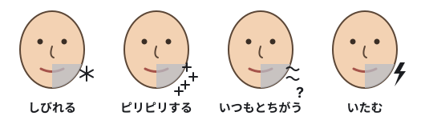

親知らずをぬくときの、神経への危険
この親知らずの根は、神経に巻き付いています。歯をぬくと、神経が傷つき、くちびるやあごがしびれることがあります。
どんな状態ですか？
親知らずは、いちばんおくにある歯です。「第三大きゅう歯」ともよびます。うまっている下の親知らずは、歯ぐきと骨の下にあり、歯ぐきの上に出ていません。正しい向きに生えることができません。
神経について
下あごの骨の中には、細い管があり、その中を神経が通っています。ここでは「下あごの神経」とよびます。医学での名前は「かしそう神経」です。同じ管の中を、血管（かしそう動脈とかしそう静脈）もいっしょに通っています。1
下あごの神経は、同じ側の下の歯と歯ぐきの感覚を伝えています。1 あごの前の方で、この神経の枝が、骨の小さなあなから外に出ます。この枝を「おとがい神経」とよびます。下くちびるとあごの感覚を伝えています。2
親知らずをぬくと、舌の神経（舌神経）も傷つくことがあります。3 1000人に1〜3人ほどは、傷がずっと続くかもしれません。456 このモデルでは、舌神経は表していません。
このモデルでは、親知らずの根が、神経と動脈に巻き付いています。
歯をぬくと、なぜ神経が傷つくことがあるのですか？
歯をぬくには、根を骨から取り出す必要があります。根は、神経を囲むように曲がっています。そのため、歯をぬくときに、神経がおされたり切れたりすることがあります。7 いっしょに通る動脈や静脈が傷ついて、血が出ることもあります。17
下あごの神経が傷つくと、その枝のおとがい神経もうまく働かなくなることがあります。2
神経が傷つくと、どうなりますか？
同じ側の下くちびる、あご、歯、歯ぐきに、次のようなことが起こることがあります。73

多くの人は、数週間から数か月で感覚がもどります（一時的な傷）。感覚が完全にはもどらない人もいます（ずっと続く傷）。789
どのくらい起こりますか？
根が神経に近い親知らずについて、多くの研究をまとめた報告がいくつかあります。報告によって差がありますが、次のようになります。
 100人中 約7人
100人中 約7人 100人中 約1人
100人中 約1人このような親知らずは、口の手術を専門にする歯医者（口くう外科）にみてもらうとよいでしょう。歯の様子を調べて、どうするかをいっしょに考えてくれます。14
参考にした論文
- Juodzbalys G, Wang HL, Sabalys G. Anatomy of mandibular vital structures. Part I: mandibular canal and inferior alveolar neurovascular bundle in relation with dental implantology. J Oral Maxillofac Res. 2010;1(1):e2. doi.org/10.5037/jomr.2010.1102
- Juodzbalys G, Wang HL, Sabalys G. Anatomy of mandibular vital structures. Part II: mandibular incisive canal, mental foramen and associated neurovascular bundles in relation with dental implantology. J Oral Maxillofac Res. 2010;1(1):e3. doi.org/10.5037/jomr.2010.1103
- Renton T, Yilmaz Z. Profiling of patients presenting with posttraumatic neuropathy of the trigeminal nerve. J Orofac Pain. 2011;25(4):333-344. PMID 22247929. pubmed.ncbi.nlm.nih.gov/22247929
- Lee J, Feng B, Park JS, et al. Incidence of lingual nerve damage following surgical extraction of mandibular third molars with lingual flap retraction: a systematic review and meta-analysis. PLoS One. 2023;18(2):e0282185. doi.org/10.1371/journal.pone.0282185
- Pichler JW, Beirne OR. Lingual flap retraction and prevention of lingual nerve damage associated with third molar surgery: a systematic review of the literature. Oral Surg Oral Med Oral Pathol Oral Radiol Endod. 2001;91(4):395-401. doi.org/10.1067/moe.2001.114154
- Petroni G, Passaretti A, Zaccheo F, et al. Lingual flap protection during third molar surgery: a literature review. Eur J Dent. 2021;15(4):776-781. doi.org/10.1055/s-0041-1730042
- Sarikov R, Juodzbalys G. Inferior alveolar nerve injury after mandibular third molar extraction: a literature review. J Oral Maxillofac Res. 2014;5(4):e1. doi.org/10.5037/jomr.2014.5401
- Kang F, Sah MK, Fei G. Determining the risk relationship associated with inferior alveolar nerve injury following removal of mandibular third molar teeth: a systematic review. J Stomatol Oral Maxillofac Surg. 2019;121(1):63-69. doi.org/10.1016/j.jormas.2019.06.010
- Rico-Barroso L, Barroso-Medel M, Gutiérrez-Pérez J, et al. Coronectomy as an alternative technique to complete extraction of mandibular third molars with risk of nerve injury. Med Oral Patol Oral Cir Bucal. 2026;31(1):e19-e30. doi.org/10.4317/medoral.27459
- Queral-Godoy E, Valmaseda-Castellón E, Berini-Aytés L, et al. Incidence and evolution of inferior alveolar nerve lesions following lower third molar extraction. Oral Surg Oral Med Oral Pathol Oral Radiol Endod. 2005;99(3):259-264. doi.org/10.1016/j.tripleo.2004.06.001
- Derbishi AA, Altayyar RA, Alsubaiei AS, et al. Coronectomy versus total extraction for third molar surgery: a systematic review and meta-analysis. Cureus. 2026;18(3):e105646. doi.org/10.7759/cureus.105646
- Kang FW, Yuan XR, Li GC, et al. Coronectomy in lower third molar surgery: a systematic review and meta-analysis. J Oral Maxillofac Surg. 2025;83(5):601-615. doi.org/10.1016/j.joms.2025.01.014
- Cervera-Espert J, Pérez-Martínez S, Cervera-Ballester J, et al. Coronectomy of impacted mandibular third molars: a meta-analysis and systematic review of the literature. Med Oral Patol Oral Cir Bucal. 2016;21(4):e505-e513. doi.org/10.4317/medoral.21074
- Faculty of Dental Surgery, Royal College of Surgeons of England. Parameters of care for patients undergoing mandibular third molar surgery. London: RCS England; 2020. www.rcseng.ac.uk/-/media/Files/RCS/FDS/3rd-molar-guidelines--April-2021-v3.pdf
このページは、名古屋大学の研究のためのものです。第1.7版（2026年10月26日）。